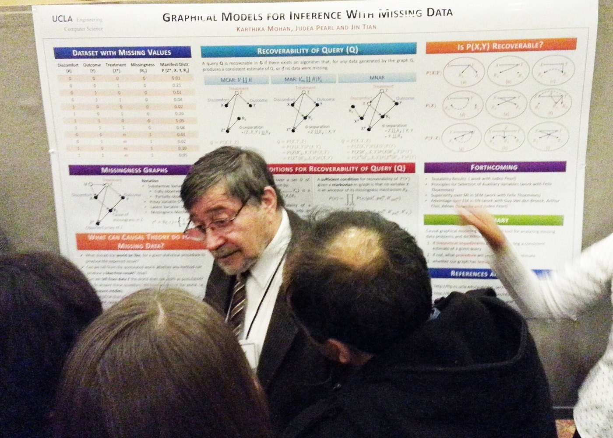
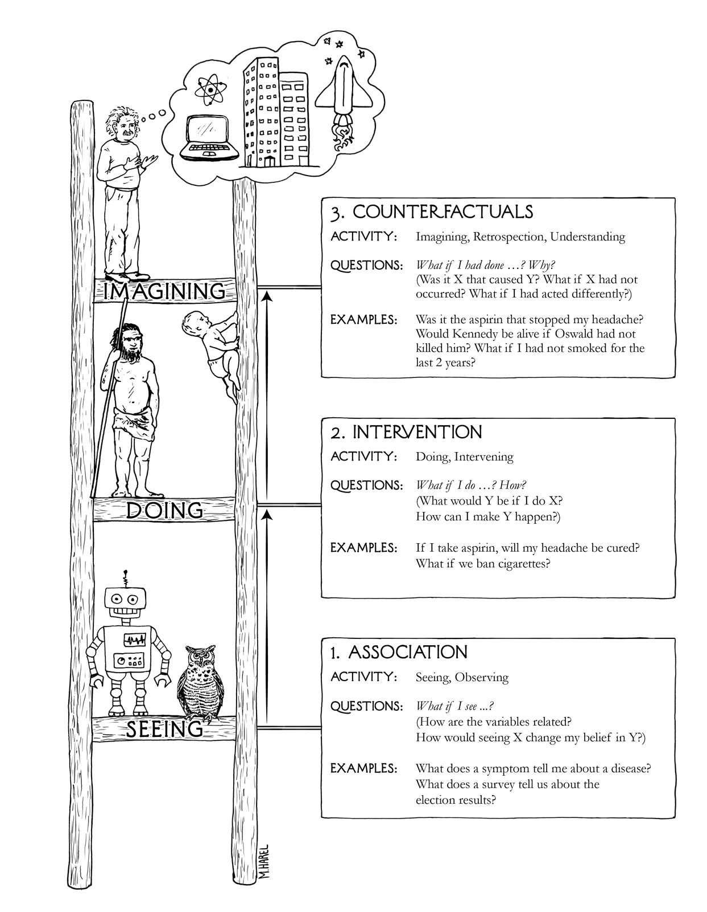

Pearl, J. (2019). Communications of the ACM 62(3), 54–60.
¿Qué preguntas de tu organización no puede responder un modelo que solo aprende de datos?

| Nivel | Actividad | Pregunta típica | Ejemplo del artículo |
|---|---|---|---|
| 3. Contrafactuales | imaginar, mirar atrás | ¿Fue X lo que causó Y? ¿Y si hubiera actuado distinto? | ¿Fue la aspirina la que me quitó el dolor? |
| 2. Intervención | hacer, intervenir | ¿Qué pasa si hago X? | ¿Qué pasa si duplicamos el precio? |
| 1. Asociación | ver | ¿Qué me dice ver X sobre Y? | ¿Quien compra crema dental compra hilo dental? |

Tabla a partir de Pearl (2019), fig. 1, traducida y resumida.
Si un sistema solo optimiza algo de los datos observados, se queda en el nivel 1. No importa su función objetivo.
Pearl propone los modelos causales estructurales: un grafo de causas, ecuaciones y una lógica para intervenir y para imaginar.
Él mismo advierte dos límites: no aplica a predecir, diagnosticar ni reconocer. Y todo depende de que el grafo supuesto sea correcto.
Las siete herramientas
En la red de la alarma, las flechas van de la causa al efecto. ¿En qué nivel de la escalera trabajaste en el 7A? ¿Y el tutor del 7B?
Elige un indicador de tu tablero. ¿Qué decisión tomas con él? ¿Es una pregunta de ver, de hacer o de imaginar?
¿Tu sistema recomienda acciones? ¿Con qué base causal? Un LLM puede proponer causas: ¿quién las verifica?
Shojaee, P. et al. (2025). The Illusion of Thinking. NeurIPS 2025. Con la réplica de Lawsen, A. (2025), Comment on The Illusion of Thinking.
Trabajos independientes: en la fase de cierre. Proyecto: la fecha se anuncia en clase.
.jpg){kind=link}